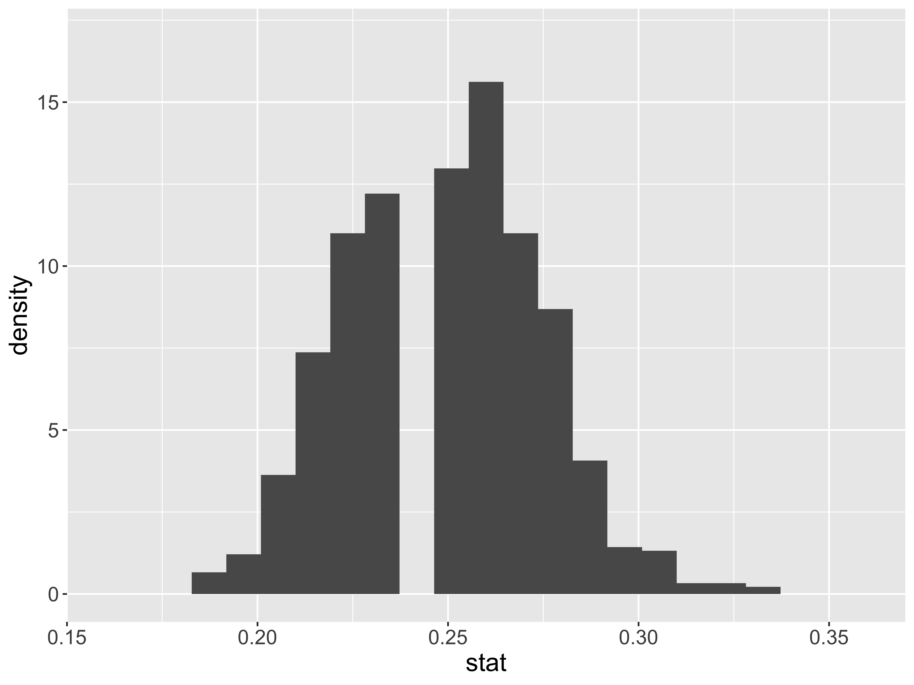
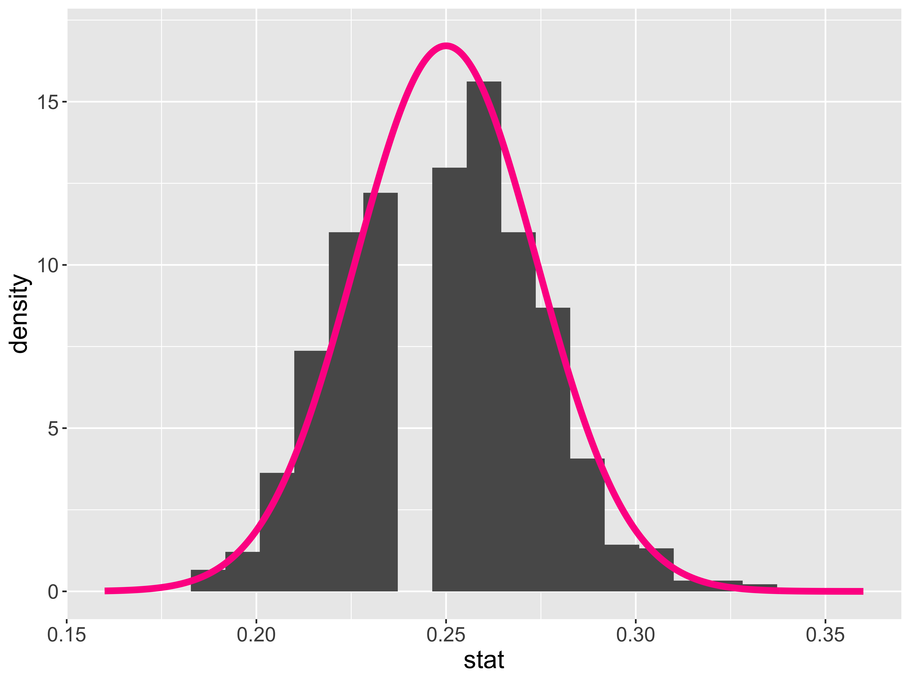
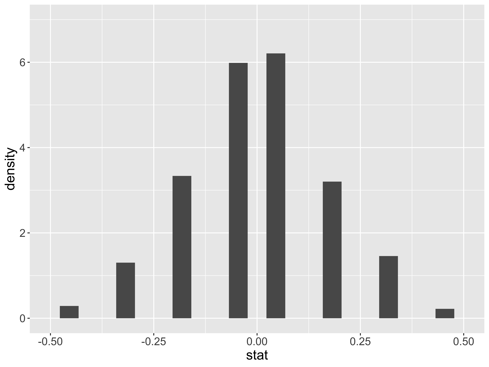
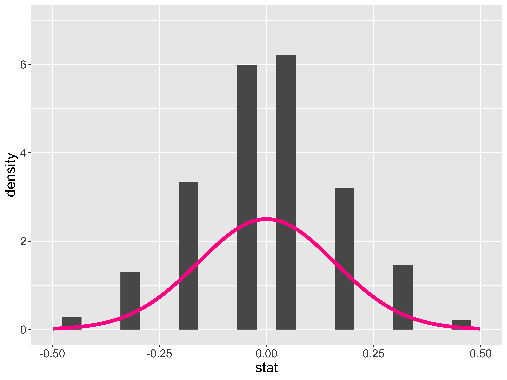
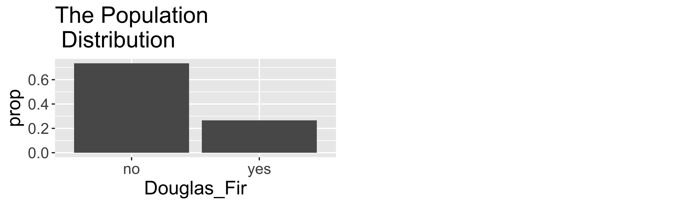
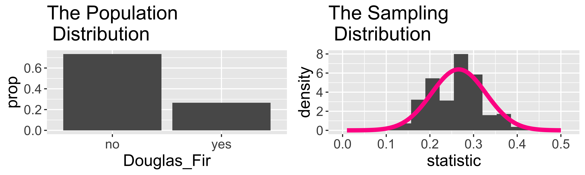
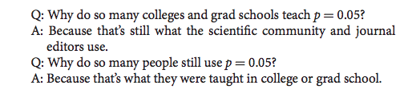

Inference: Random Variables + P-Value Pitfalls
Kelly McConville
DATA 100
Week 10 | Spring 2026
Announcements
- Exam next week:
- In-class on Wed (April 8th)
- Orals throughout the day on Fri (April 10th). In-person this time!
Goals for Today
- Statistical inference zoom out
- Approximating inference using random variables
- A hearty p-values discussion
Which Flavor of Data Scientist Are You?
Data Visualizer
Data Wrangler
Model Builder
Inferencer
Statistical Inference Zoom Out – Estimation

Question: How did folks do inference before computers?
Statistical Inference Zoom Out – Testing

Question: How did folks do inference before computers?
Statistical Inference Zoom Out – Estimation

Question: How did folks do inference before computers?
Statistical Inference Zoom Out – Testing

Question: How did folks do inference before computers?
It is time to recast some of the sample statistics we have been exploring as random variables!
Sample Statistics as Random Variables
Random variable (RV) is a random process that takes on numerical values.
- Statisticians understand the shape, center, and spread of MANY random variables.
Here are some of the sample statistics we’ve seen lately:
\(\hat{p}\) = sample proportion of correct receiver guesses out of 329 trials
\(\hat{p}_D - \hat{p}_Y\) = difference in sample improvement proportions between those who swam with dolphins and those who did not
Why are these all random variables?
Approximating These Distributions
- \(\hat{p}\) = sample proportion of correct receiver guesses out of 329 trials
We generated its Null Distribution:
Which is well approximated by the distribution of a Normal random variable.

Approximating These Distributions
- \(\hat{p}_D - \hat{p}_Y\) = difference in sample improvement proportions between those who swam with dolphins and those who did not
We generated its Null Distribution:

Which is kinda somewhat approximated by the distribution of a Normal random variable.

“All models are wrong but some are useful.” – George Box
Approximating These Distributions
How do I know which random variable is a good approximation for my statistic?
Once I have figured out the random variable, how do I use it to do statistical inference?
Central Limit Theorem
Central Limit Theorem (CLT): For random samples and a large sample size \((n)\), the sampling distribution of many sample statistics is approximately normal.
Example: Portland Park Trees

Approximating Sampling Distributions
Central Limit Theorem (CLT): For random samples and a large sample size \((n)\), the sampling distribution of many sample statistics is approximately normal.
Example: Harvard Trees

- The larger the sample size, the closer the distribution gets to being bell-shaped and symmetric, like a Normal random variable.
Sometimes it is easier to find a good random variable approximation if we standardize our sample statistic first.
Z-scores
All of our test statistics so far have been sample statistics.
Another commonly used test statistic takes the form of a z-score:
\[ \mbox{Z-score} = \frac{X - \mbox{mean}}{\mbox{standard deviation}} \]
Standardized version of the sample statistic.
Z-score measures how many standard deviations the sample statistic is away from its mean.
Z-score Example
\(\hat{p}\) = proportion of Maples in a sample of 50 trees
Mean of \(\hat{p}\): 0.138
Standard deviation of \(\hat{p}\): 0.049
Suppose we have a sample where \(\hat{p} = 0.05\). Then the z-score would be:
\[ \mbox{Z-score} = \frac{0.05 - 0.138}{0.049} = -1.8 \]
Z-score Test Statistics
- A Z-score test statistic is one where we take our original sample statistic and convert it to a Z-score:
\[ \mbox{Z-score} = \frac{\mbox{statistic} - \mbox{mean}}{\mbox{standard deviation}} \]
- Allows us to quickly (but roughly) classify results as unusual or not.
- \(|\) Z-score \(|\) > 2 → results are unusual/p-value will be smallish
Inference based on Random Variable Approximation: One Proportion
Let’s consider conducting a hypothesis test for a single proportion: \(p\)
Example: Bern and Honorton’s (1994) extrasensory perception (ESP) studies
# A tibble: 1 × 6
statistic chisq_df p_value alternative lower_ci upper_ci
<dbl> <int> <dbl> <chr> <dbl> <dbl>
1 40.9 1 1.60e-10 two.sided 0.273 0.376When is the random variable approximation reasonable?
Inference for a Single Mean
Example: Are lakes in Florida more acidic or alkaline? The pH of a liquid is the measure of its acidity or alkalinity where pure water has a pH of 7, a pH greater than 7 is alkaline and a pH less than 7 is acidic. The following dataset contains observations on a sample of 53 lakes in Florida.
Cases:
Variable of interest:
Parameter of interest:
Hypotheses:
Inference for a Single Mean: Simulation-Based Approach
# A tibble: 1 × 1
p_value
<dbl>
1 0.024Why are we using type = "bootstrap" when constructing a null distribution?!
Inference for a Single Mean: Random Variable-Based Approach
# A tibble: 1 × 7
statistic t_df p_value alternative estimate lower_ci upper_ci
<dbl> <dbl> <dbl> <chr> <dbl> <dbl> <dbl>
1 -2.31 52 0.0247 two.sided 6.59 6.24 6.95When is the random variable approximation reasonable?
Statistical Inference using Random Variables
We went through random variable-based inference for \(p\) and for \(\mu\).
There are similar results for other parameters. But the random variable approximation changes.
- Will extend beyond inference for 1 variable next time.
P-Values
Let’s Talk About P-values
The original intention of the p-value was as an informal measure to judge whether or not a researcher should take a second look.
But to create simple statistical manuals for practitioners, this informal measure quickly became a rule: “p-value < 0.05” = “statistically significant”.
What were/are the consequences of the “p-value < 0.05” = “statistically significant” rule?
Let’s Talk About P-values
- A consequence: The p-value is often misinterpreted to be the probability the null hypothesis is true.
- A p-value of 0.003 does not mean there’s a 0.3% chance that ESP doesn’t exist!
- By giving people a simple rule, they never learned what the p-value actually measures.
Let’s Talk About P-values
- A consequence: Researchers often put too much weight on the p-value and not enough weight on their domain knowledge/the plausibility of their conjecture.
- Sometimes we give more weight to things we don’t understand.
- xkcd comic

Let’s Talk About P-values
A consequence: P-hacking: Cherry-picking promising findings that are beyond this arbitrary threshold.

Let’s Talk About P-values
- A consequence: People conflate statistical significance with practical significance.
Example: A recent Nature study of 19,000+ people found that those who meet their spouses online…
Are less likely to divorce (p-value < 0.002)
Are more likely to have high marital satisfaction (p-value < 0.001)
BUT the estimated effect sizes were tiny.
- Divorce rate of 5.96% for those who met online versus 7.67% for those who met in-person.
- On a 7 point scale, happiness value of 5.64 for those who met online versus 5.48 for those who met in-person.
Question: Do these results provide compelling evidence that one should change their dating behavior?
Let’s Talk About P-values
A consequence: People conflate statistical significance with practical significance.
We won’t use the “statistically significant” language in DATA 100. Instead say “statistically discernible.”
Let’s Talk About P-values
Despite its issues, p-values are still quite popular and can still be a useful tool when used properly.
In 2014, George Cobb a professor from Mount Holyoke College poised the following questions (and answers):

- I want us to stop this cycle.
DATA 100 & P-Values
Understanding p-values and being able to interpret a p-value in context is a learning objective of DATA 100.
- Ex: If ESP doesn’t exist, the probability of guessing correctly on at least 106 out of 329 trials is 0.003.
Understanding that a small p-value means we have evidence for \(H_a\) is important.
- Ex: Because the p-value is small, we have evidence for ESP.
Understanding that a small p-value alone does not imply practical significance.
- Create a confidence interval to measure the effect size!
Understanding that what you mean by small should depend on your field and whether a Type I Error or Type II Error is worse for your particular research question.
Your ability to tell if a # is less than 0.05 is not a learning objective for DATA 100.
Reminders:
- Exam next week:
- In-class on Wed (April 8th)
- Orals throughout the day on Fri (April 10th). In-person this time!